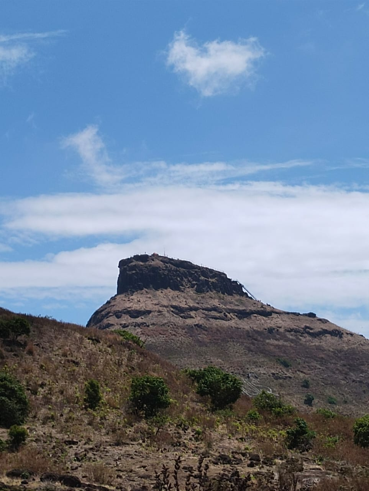

This is a blog which will let y’all readers know how I am feeling after climbing Maharashtra’s highest peak. Words probably won’t be of much help but let’s give it a try.
It all starts with a post
So, there’s a local community of trekkers in my city called EcofriendlyClub. They’ve been organizing treks to various places in the Sahyadri Mountain Ranges from the last 7-8 years. I’ve been them many times to various places. So, I saw the announcement of Kalsubai Trek in a whatsapp group. In the past I missed the opportunity for Kalsubai Trek for 3 times consecutively. But everything happens for good right ?
Prep
Kalsubai is 1646m (5400 ft) in height with total 15-16 km of walking distance. So, for sure it needs pre-trek walking habbit. I love walking hence, I just increased my walking time and distance. I started walking 10-15k steps everyday. Walking is the best thing to do after you do a lot of sitting in frnot of computer.
The trek was for 2 days. The first day we explored worlds second largest valley, Sandhan Valley. It’s has huge and tons of stones inside. I felt like Bear Grylls when running and trekking between them 😂. Need to give him the credits for showing how to climb between two stones in his episodes.
Packing
Talking of packing, I have done nothing, 2 hour before leaving I was still sitting in front of the computer. I actually had to deploy my internship project. So, I was totally messed up. But, my sister already got all the things packed. So, it was just eating, changing and leaving for the bus stop.
Sandhan Valley - The 2nd Largest Valley in Asia
As planned the first day of the trek is always a bonus for everyone. The first day is full of enjoyment at various spots having good food, and it’s like a chill moment for everyone stressed out. So, they had planned Sandhan Valley for us first. We started the trek for Sandhan Valley at something 1:45 something after having a traditional rural village meal which is always tastier in its own and made with utmost love. It was the first time in my life when I saw stones big as thrice of my height. Chuckled up for sure. I was always conscious of me not stepping up at the wrong place. I got stucked at a point where it was too much clumsyness of people getting into the valley and others getting out of the valley. So, after an hour of waiting I finally passed that entry point. All of my mates already set ahead. I ran off all the stones (P.S: I felt like bear grylls).
There are two spots in the valley where it is full of water. Very soon, the first one showed up. I removed my shows and threw it to the other side so that they don’t get wet. But Duhh! it didn’t happen as expected. One of my bounced of by hittinga stone and felt into water. I crossed it slowly and when I was going to pick it up, the most mandatory things happened - I fell into water 😂 (P.S: But that was refreshing, water was cold). At the second patch we weren’t allowed to go ahead as I was too late. So, I thought why not just sit and get a nice and natural pedicure from small fishes.

Soon after that we returned out of the valley. We had yet another good dinner. And set of to watch fireflies. Ngl, they were very beautiful and made me feel sleepy. It’s a way too different mechanism of insects. They literally have inbuilt Light Emitting Diodes inside them 😂 /jk.
Saw some kids playing their own kind of video game of real life. And I started running behind them :)

The night went well inside tent with just 2 of us in the whole tent.
The Final Moment!!
Morning and everyone ready to set off for the trek. I had a nice power nap until we reached the base of the peak. Moreover because I felt like vomitting ;-;. Soon as we reached, There was this huge as hell mountain in front of us. I wasn’t much tensed because I had done 4 treks before which were like tough enough. So, wasn’t a big issue for me.
The initial hour involved some difficult climbs, but the cool breeze provided a sense of relief amid the pounding heartbeat. Moving at a good pace, we enjoyed the trek, even discovering a small waterfall of water droplets between the stones. I couldn’t resist the temptation and positioned myself beneath it, experiencing a tremendous sense of relief.
Found some black plum treks in the forest after sometime, So it was mandatory to break and taste those sweet plums.
After an hour of trekking, the peak finally came into view. Its sheer size ignited a strong desire to reach the top. Following the markings on the stones, we made our way towards the peak, moving swiftly through the last stretch.
And finally we reached the top. The moment everyone had a nice smile on their faces. Removed my shoes, went to the temple. Prayed to the goddess there saying “Thank you for letting us reach the top!”.
Credits
I would like to extend my sincere thanks to EcoFriendly for organizing this awe-inspiring trek and for making my dream come true.